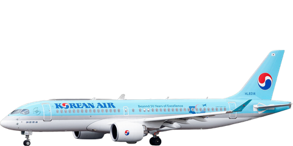 | Korean Air Airbus A220-300 HL8314 (48946393983).jpg | Melvin Loi from Macau, Macau | CC BY-SA 2.0 | 배경 제거, 잘라내기, 크기 조정 |
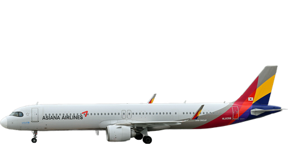 | RJAA - 24-APR-2022.jpg | Steven Byles | CC BY-SA 2.0 | 배경 제거, 잘라내기, 크기 조정 |
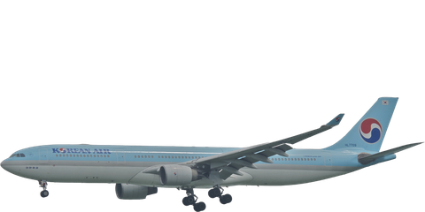 | Korean Air Airbus A330-300; HL7709@HKG;05.08.2012 671cs (8008530856).jpg | Aero Icarus from Zürich, Switzerland | CC BY-SA 2.0 | 배경 제거, 잘라내기, 크기 조정 |
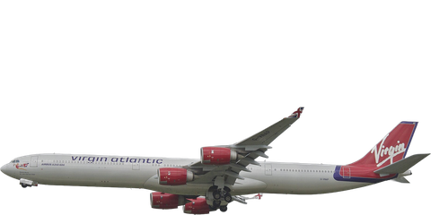 | Virgin Atlantic Airbus A340-600; G-VNAP@LHR;13.05.2013 708dn (8742393116).jpg | Aero Icarus from Zürich, Switzerland | CC BY-SA 2.0 | 배경 제거, 잘라내기, 크기 조정 |
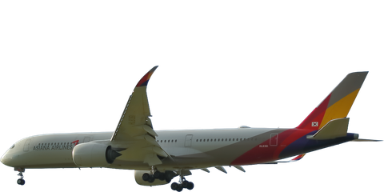 | ASIANA AIRLINES AIRBUS A350-900 HL8361 (53113919310).jpg | simon butler from halesowen, uk | CC BY 2.0 | 배경 제거, 잘라내기, 크기 조정 |
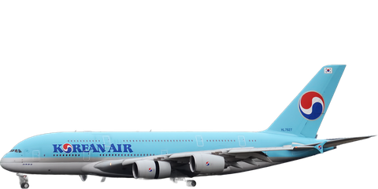 | Korean Air, HL7627, Airbus A380-861 (31398846008).jpg | Anna Zvereva from Tallinn, Estonia | CC BY-SA 2.0 | 배경 제거, 잘라내기, 크기 조정 |
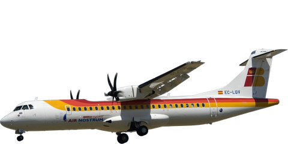 | Air Nostrum ATR 72-600 (EC-LQV) landing at Melilla Airport.jpg | HTH9 | CC BY-SA 3.0 | 배경 제거, 잘라내기, 크기 조정 |
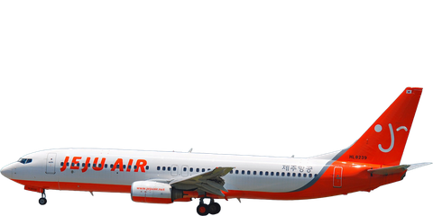 | Jeju Air Boeing 737-800; HL8239@HKG;04.08.2011 615kx (6207350945).jpg | Aero Icarus from Zürich, Switzerland | CC BY-SA 2.0 | 배경 제거, 잘라내기, 크기 조정 |
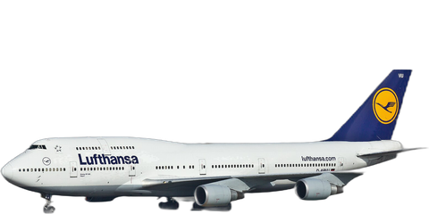 | Lufthansa - D-ABVU - Boeing 747-400 - San Francisco International Airport-0389.jpg | Raimond Spekking | CC BY-SA 4.0 | 배경 제거, 잘라내기, 크기 조정 |
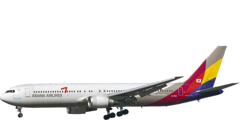 | HL7514 B767-300 Asiana Airlines (7567040714).jpg | Maarten Visser from Capelle aan den IJssel, Nederland | CC BY-SA 2.0 | 배경 제거, 잘라내기, 크기 조정 |
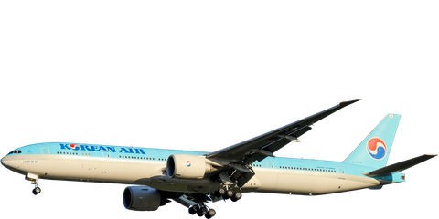 | Korean Airlines Boeing 777-300ER HL8008 on final approach to Washington Dulles May 2020.jpg | Dylan T | CC BY 2.0 | 배경 제거, 잘라내기, 크기 조정 |
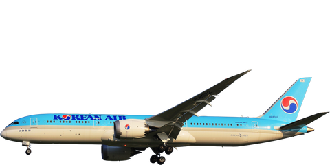 | ANA JA934A 787-9 HND 17-09-2024 (2).jpg | BWard 1997 | CC BY 4.0 | 배경 제거, 잘라내기, 크기 조정 |
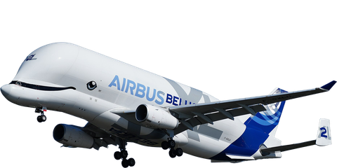 | Hamburg-Finkenwerder Airport Airbus Transport International Airbus A330-743L Beluga XL F-GXLH (DSC09359).jpg | MarcelX42 | CC BY-SA 4.0 | 배경 제거, 잘라내기, 크기 조정 |
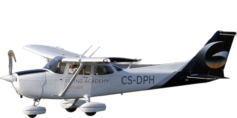 | Cessna 172 Skyhawk, Gestair Flying Academy JP6862074.jpg | Pedro Aragão | CC BY-SA 3.0 | 배경 제거, 잘라내기, 크기 조정 |
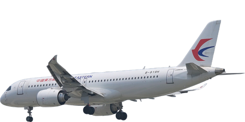 | China Eastern Airlines Comac C919 B-919H on final approach to Shanghai Hongqiao June 2025.jpg | 4300streetcar | CC BY 4.0 | 배경 제거, 잘라내기, 크기 조정 |
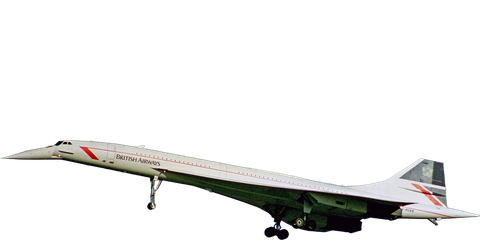 | G-BOAB 1 B.Ae-Aerospatiale Concorde 102 British Airways MAN 13SEP98.jpg | Ken Fielding | CC BY-SA 3.0 | 배경 제거, 잘라내기, 크기 조정 |
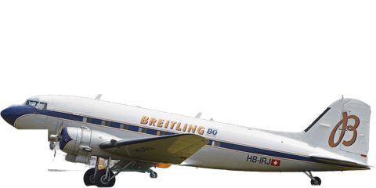 | Douglas DC3-227B ‘HB-IRJ’ (19679489640).jpg | Alan Wilson from Stilton, Peterborough, Cambs, UK | CC BY-SA 2.0 | 배경 제거, 잘라내기, 크기 조정 |
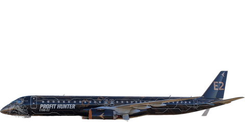 | Embraer 'Profit Hunter' (PR-ZIQ) Embraer E195-E2 demonstrator on display at the 2023 Australian International Airshow.jpg | Bidgee | CC BY-SA 3.0 au | 배경 제거, 잘라내기, 크기 조정 |
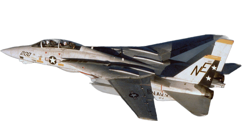 | F-14 Tomcat VF-2.jpg | Service Depicted: NavyCamera Operator: LCDR D. BARANEK, USN | Public domain | 배경 제거, 잘라내기, 크기 조정 |
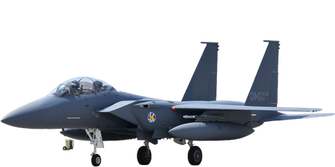 | F-15K arrives at Nellis AFB.jpg | U.S. Air Force photo by Chief Master Sgt. Gary Emery | Public domain | 배경 제거, 잘라내기, 크기 조정, 좌우 반전 |
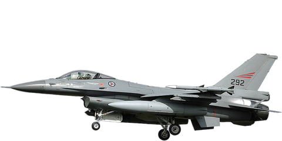 | General Dynamics F-16AM Fighting Falcon, Norway - Air Force JP7390360.jpg | Aldo Bidini | GFDL 1.2 | 배경 제거, 잘라내기, 크기 조정 |
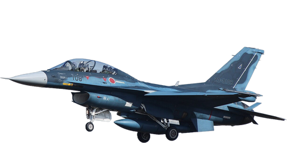 | Mitsubishi F-2 in flight 23.jpg | Jerry Gunner from Lincoln, UK | CC BY 2.0 | 배경 제거, 잘라내기, 크기 조정 |
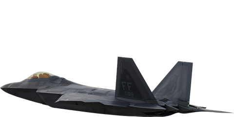 | F-22 Raptor takes flight (12460589075).jpg | US Air Force from USA | Public domain | 배경 제거, 잘라내기, 크기 조정 |
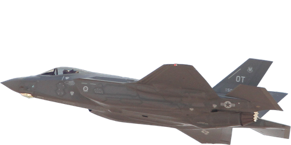 | Lockheed-Martin F-35A Lightning II ‘13-5073 - OT’ (28120304086).jpg | Alan Wilson from Stilton, Peterborough, Cambs, UK | CC BY-SA 2.0 | 배경 제거, 잘라내기, 크기 조정 |
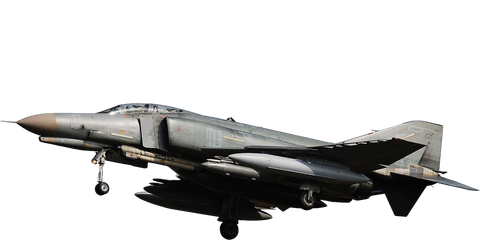 | F-4 Phantom II (Luftwaffe) (8737383346).jpg | bomberpilot | CC BY-SA 2.0 | 배경 제거, 잘라내기, 크기 조정 |
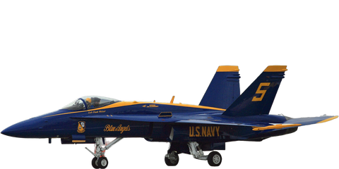 | Blue Angel 5 on his takeoff roll (5232225751).jpg | Frank Kovalchek from Anchorage, Alaska, USA | CC BY 2.0 | 배경 제거, 잘라내기, 크기 조정 |
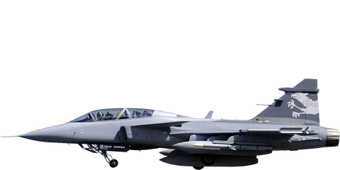 | Saab JAS-39NG Gripen, Saab JP6905147.jpg | Aldo Bidini | GFDL 1.2 | 배경 제거, 잘라내기, 크기 조정 |
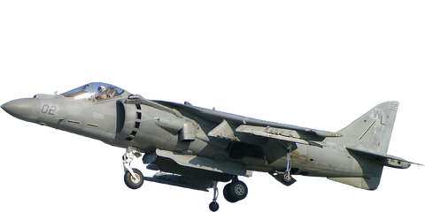 | United States Marine Corps AV-8B Harrier II hovering.jpg | D. Miller from IL. USA | CC BY 2.0 | 배경 제거, 잘라내기, 크기 조정 |
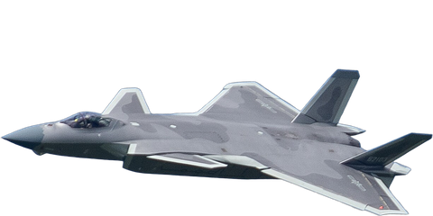 | J-20 at CCAS2022 (20220827103426).jpg | N509FZ | CC BY-SA 4.0 | 배경 제거, 잘라내기, 크기 조정 |
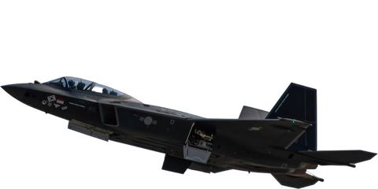 | A South Korean Air Force KF-21, developed by Korea Aerospace Industries, performs an aerial demonstration at the Aerospace and Defense Exhibition in Seoul, South Korea, October 21, 2023.jpg | Sgt. Alexander Kelly | Public domain | 배경 제거, 잘라내기, 크기 조정, 좌우 반전 |
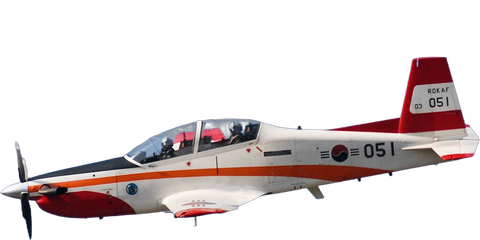 | KT-1 acrobatic.jpg | Doo-ho Kim from Seoul, Republic of Korea | CC BY-SA 2.0 | 배경 제거, 잘라내기, 크기 조정 |
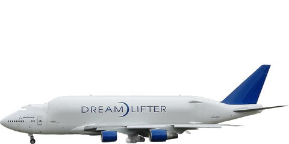 | Boeing 747-400LCF Dreamlifter (N747BC).jpg | Quintin Soloviev | CC BY 4.0 | 배경 제거, 잘라내기, 크기 조정 |
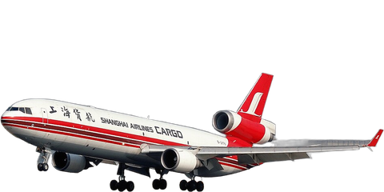 | McDonnell Douglas MD-11(F), Shanghai Airlines Cargo JP6300741.jpg | shimin | GFDL 1.2 | 배경 제거, 잘라내기, 크기 조정 |
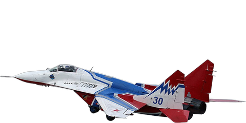 | MiG-29 9-13 (25251486772).jpg | Dmitry Terekhov from Odintsovo, Russian Federation | CC BY-SA 2.0 | 배경 제거, 잘라내기, 크기 조정 |
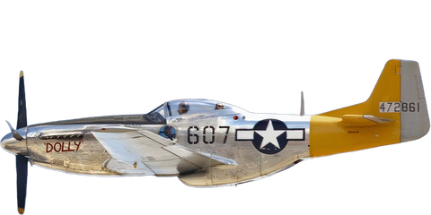 | P-51 Mustang "Dolly" (55202042855).jpg | Kevin M. Gill | CC BY 4.0 | 배경 제거, 잘라내기, 크기 조정 |
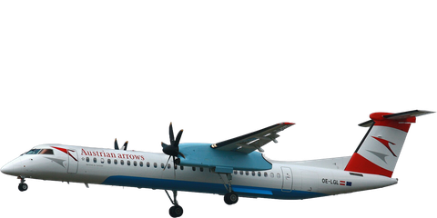 | 2010-06-30 Dash8 AustrianArrows OE-LGL EDDF 02.jpg | Wo st 01
(There are 682 Pictures in my Category)
See also Toolserver | CC BY-SA 3.0 de | 배경 제거, 잘라내기, 크기 조정 |
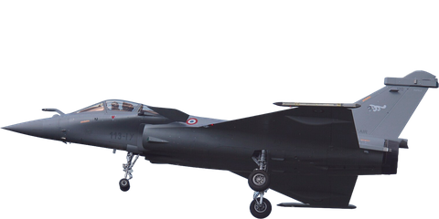 | Kecskemet 2010 Rafale photo 60.jpg | Łukasz Golowanow | Attribution | 배경 제거, 잘라내기, 크기 조정 |
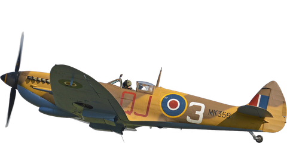 | Supermarine Spitfire LF.IXc ‘MK356 QJ-3’ (42083530554).jpg | Alan Wilson from Stilton, Peterborough, Cambs, UK | CC BY-SA 2.0 | 배경 제거, 잘라내기, 크기 조정 |
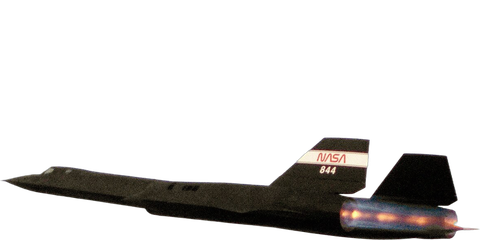 | SR-71 Blackbird afterburn.jpg | NASA | Public domain | 배경 제거, 잘라내기, 크기 조정 |
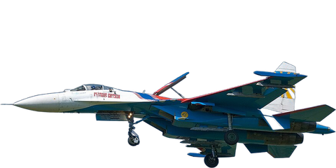 | Su-27 Russian Knights 08.jpg | Dmitry A. Mottl | Public domain | 배경 제거, 잘라내기, 크기 조정 |
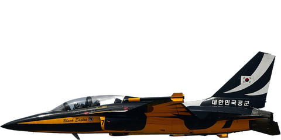 | Riat 2022 - Republic of Korea Air Force - The Black Eagles 8 KAI T-50B Golden Eagles DSC 5042 (52234460179).jpg | Bernardo Fernandez copado | CC BY 2.0 | 배경 제거, 잘라내기, 크기 조정 |
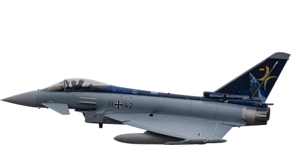 | Eurofighter Typhoon Luftwaffe.jpg | TunaFish Spotting | CC BY-SA 4.0 | 배경 제거, 잘라내기, 크기 조정 |
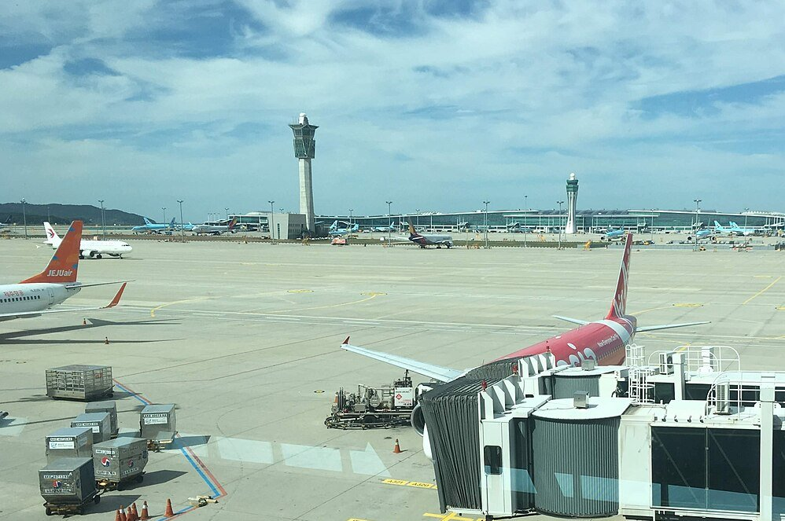 | Incheon International Airport Air Traffic Control tower and terminal 2.jpg | Christophe95 | CC BY-SA 4.0 | 잘라내기, 크기 조정 |
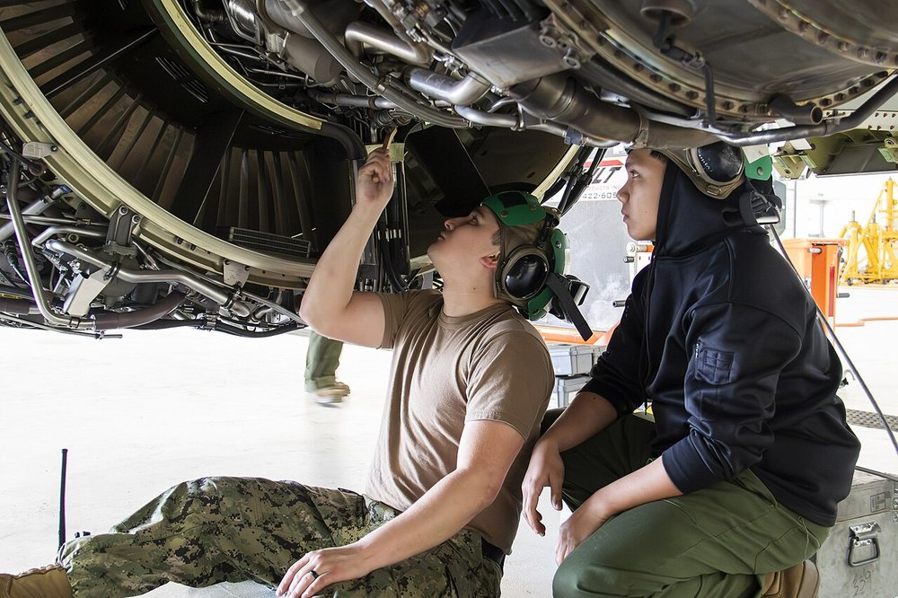 | P-8A Phase Inspections (8253154).jpg | U.S. Navy photo by Petty Officer 2nd Class Jacquelin Frost | Public domain | 크기 조정 |
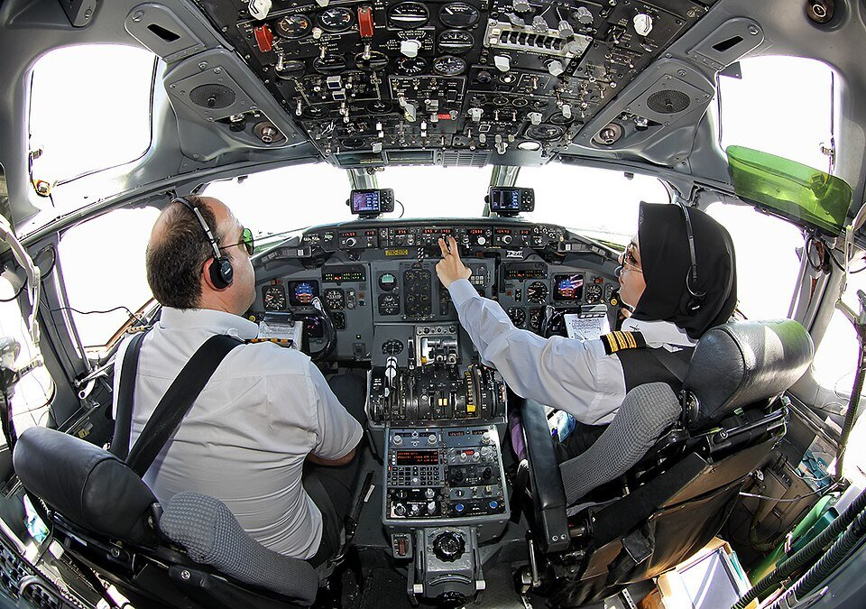 | Zagros Airlines McDonnell Douglas MD-82.jpg | Mohammadreza Farhadi Aref | CC BY-SA 4.0 | 크기 조정 |
.jpg){kind=link}

.jpg){kind=link}
.jpg){kind=link}
.jpg){kind=link}
.jpg){kind=link}
_landing_at_Melilla_Airport.jpg){kind=link}
.jpg){kind=link}

.jpg){kind=link}

.jpg){kind=link}
.jpg){kind=link}


.jpg){kind=link}
_Embraer_E195-E2_demonstrator_on_display_at_the_2023_Australian_International_Airshow.jpg){kind=link}


.jpg){kind=link}
.jpg){kind=link}
_(8737383346).jpg){kind=link}
.jpg){kind=link}


.jpg){kind=link}


.jpg){kind=link}
,_Shanghai_Airlines_Cargo_JP6300741.jpg){kind=link}
.jpg){kind=link}
.jpg){kind=link}


.jpg){kind=link}


.jpg){kind=link}


.jpg){kind=link}